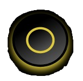

BACK
SELECT SONG:
LET'S GROOVE
KNIGHTS OF CYDONIA
BAT COUNTRY
DECODE
EVENTUALLY

0
0x
You Won!
Your score: 1220
Computer score: 900
PLAY AGAIN
You Lost!
Your score: 200
Computer score: 800
PLAY AGAIN